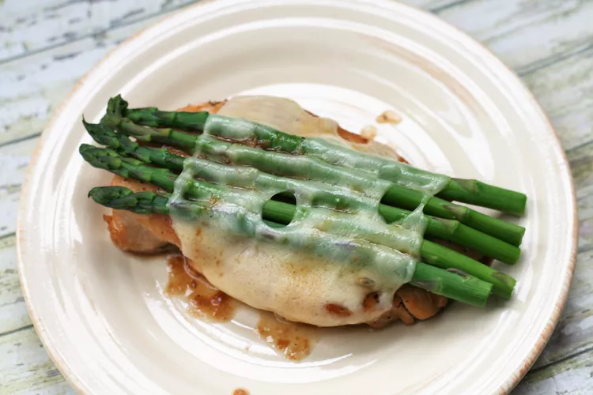

Chicken Teriyaki with Asparagus
This is delicious! Teriyaki chicken with steamed asparagus and Swiss cheese will please your whole family!

Ingredients
-
¾ cup honey teriyaki sauce
-
¼ cup white wine
-
4 skinless, boneless chicken breast halves
-
16 spears fresh asparagus
-
4 slices Swiss cheese
Directions
-
In a large bowl, mix the honey teriyaki sauce and wine. Place chicken in the bowl, and coat with the marinade. Cover, and marinate in the refrigerator at least 1 hour (it is best if you can marinate overnight).
-
Preheat oven to 375 degrees F (190 degrees C).
-
Discard marinade, and arrange chicken breasts in a baking dish. Bake 15 minutes in the preheated oven, until almost done.
-
Place the asparagus in a pot fitted with a steamer basket over 1 inch of boiling water, and steam 5 minutes, until tender.
-
Place 4 asparagus spears on each chicken breast, and top each breast with a slice of Swiss cheese. Return to oven, and continue baking 10 minutes, or until cheese is melted and chicken juices run clear.
Return to Odin Recipes